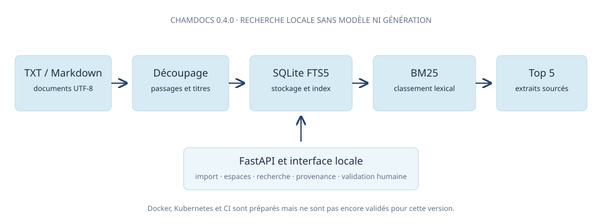

Version 0.4.0 vérifiée localement
CHamDocs
Retrouver les passages utiles.
Conserver leur provenance.
CHamDocs importe des fichiers texte ou Markdown, les découpe en passages et retourne jusqu’à cinq extraits originaux avec leur fichier source et leur numéro de passage. Le lecteur garde la responsabilité de vérifier ce que ces extraits démontrent.
Le code et les corpus restent privés. Il n’existe pas de démonstration publique : la version présentée fonctionne en local et son état 0.4.0 n’est pas encore figé dans un nouveau commit du dépôt CHamDocs.
Une recherche locale,
sans réponse générée.
La version active n’utilise ni modèle génératif, ni Ollama, ni embeddings, ni clé d’API.
1. Importer et indexer
Un espace documentaire reçoit jusqu’à vingt fichiers .txt ou .md UTF-8, limités à 1 Mo chacun. Le découpage déterministe conserve les titres et stocke les passages dans SQLite.
2. Rechercher
SQLite FTS5 classe les passages avec BM25 à partir des termes de la requête. La route utile est POST /v1/workspaces/{id}/search.
3. Examiner les extraits
L’interface affiche jusqu’à cinq textes originaux, leur fichier et leur numéro de passage. Ils ne sont ni reformulés ni transformés en réponse.
4. Valider humainement
Un extrait contenant les mêmes mots peut être hors contexte. CHamDocs n’attribue aucun niveau de confiance et ne certifie pas qu’un passage répond à la question.
Peu de composants.
Un résultat traçable.
FastAPI expose les espaces, l’import, la suppression et la recherche. SQLite conserve les passages et leur provenance.

Ouvrir le schéma en grand. L’ancienne route /ask est retirée et renvoie 410 Gone avec une consigne de migration.

Mesurer la récupération,
pas promettre une réponse.
Les corpus sont synthétiques et connus. Les chiffres évaluent la présence des preuves attendues parmi les extraits, pas l’exactitude d’une réponse rédigée.
Ce qui a été contrôlé
Imports dans des bases temporaires séparées, persistance, isolation des espaces, suppression, validation des requêtes, texte original des extraits, routes retirées et cohérence entre CLI et API.
Régression visible
Un cas de reformulation connu reste absent des cinq premiers extraits. Il est conservé au bilan. Le workflow n8n manuel a aussi été exécuté avec succès, puis vérifié avec une régression volontaire déclenchant son nœud d’erreur.
Ce que la version actuelle
ne revendique pas.
Le périmètre reste volontairement local et étroit.
Limites fonctionnelles
- Pas de compréhension des synonymes, des négations ou des contradictions.
- Pas d’import PDF ou Word.
- Pas d’authentification ni de service public multiutilisateur.
- « Aucune correspondance » ne prouve pas l’absence d’une information.
Validation encore à faire
- La nouvelle image Docker est préparée, mais sa construction n’est pas encore validée.
- Les manifestes Kubernetes décrivent la version lexicale, sans déploiement confirmé.
- La CI distante n’est pas encore validée.
- La prochaine amélioration doit être mesurée : normalisation, variantes ou synonymes contrôlés.
L’expérimentation IA
reste documentée, pas active.
Les anciennes versions exploraient recherche hybride, embeddings et génération locale avec Ollama.
Pourquoi le parcours a changé
La génération pouvait produire une réponse plausible sans garantir que les passages la soutenaient. La version 0.4.0 se concentre donc sur la récupération de textes originaux et la traçabilité.
Ce qui est conservé
L’ancien code et ses rapports restent archivés dans le dépôt privé pour documenter l’apprentissage. Ils ne décrivent plus le fonctionnement actuel et leurs anciennes métriques ne sont pas mélangées aux résultats lexicaux.
Lire la note historique →Cadrer, tester,
documenter les limites.
J’ai défini le besoin et les scénarios, piloté la simplification vers un parcours lexical, essayé l’interface et demandé que les échecs connus restent visibles. Le développement, les tests et la documentation ont été réalisés avec assistance IA, puis contrôlés sur les fichiers et rapports locaux.
Dans ce projet
Conception d’API FastAPI, stockage SQLite, recherche FTS5/BM25, tests automatisés, lecture de rapports d’évaluation, automatisation n8n et documentation technique. Docker, Kubernetes et CI restent ici des technologies préparées ou explorées tant que leur nouvelle chaîne n’est pas validée.
Un besoin documentaire
à explorer ?
Je peux présenter les choix, les essais et les limites observées.